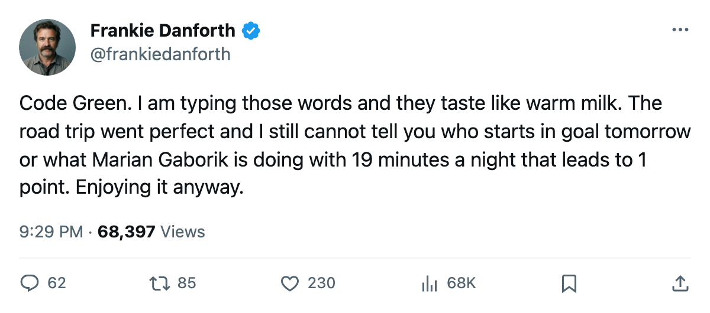
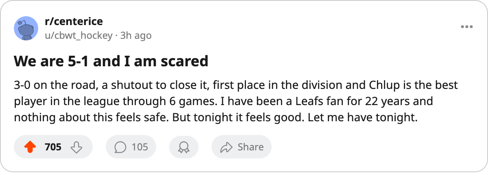

TOR
TOR MTL
MTL PIT
PIT NYR
NYRDANFORTH: Code Green, the +11 that produced nothing, and a trip I did not expect
Five wins, a shutout, first place, and a winger rated 99 with 1 point
 Frankie DanforthColumnist · Queen City Telegram
Frankie DanforthColumnist · Queen City Telegram
Code Green

Code Green. Five wins, one loss, 10 points, first in the Northeast. A 3-0 road trip closed with a shutout. I said on 2005-10-15 that I did not know who starts in goal tomorrow. I still do not. But when the man in the crease stops all 26 shots he sees, the question gets easier to set aside for a night.
The road trip was the thing nobody on this desk pencilled in. 4-0 at Pittsburgh, 6-2 at the Garden, 2-0 at Montreal. Two goals allowed in 3 games. The Maple Leafs came out of October with 3 wins on the road and nobody in the Northeast has a winning record away from home yet.
The defence. After the Pittsburgh loss and the Phoenix game, I wrote that this group was letting in 3 a night. They let in 2 at New York and 0 at Montreal. I will not call it fixed.  Bryan McCabe84 has not skated this season. Steve Eminger82 has not skated. The top pair is
Bryan McCabe84 has not skated this season. Steve Eminger82 has not skated. The top pair is  Rostislav Klesla87 and
Rostislav Klesla87 and  Barret Jackman86, and they are 23 and 24. That is young and that is good and it will wear down by February.
Barret Jackman86, and they are 23 and 24. That is young and that is good and it will wear down by February.
The thing that keeps me honest:  Marian Gaborik99 has 1 point in 5 games. 1 goal, 0 assists, 19.4 minutes a night. The Bureau's Development Index has him at +11, the second-highest form mark in the league behind
Marian Gaborik99 has 1 point in 5 games. 1 goal, 0 assists, 19.4 minutes a night. The Bureau's Development Index has him at +11, the second-highest form mark in the league behind  Vaclav Nedorost84's +12. His overall reads 99. He earns $11.90M. The man is rated the best player on my roster and the scoresheet says otherwise.
Vaclav Nedorost84's +12. His overall reads 99. He earns $11.90M. The man is rated the best player on my roster and the scoresheet says otherwise.
I trust the Index for what it measures. It says form, the difference between how a man is playing and where his base sits. Gaborik's base is 91. The Index has him 11 above that. The desk thinks he is playing out of his mind and the puck is not going in. Fine. I will wait until December. But a $11.90M winger who puts up 1 point through 5 games and a +11 Index needs the production to arrive before the trade deadline, or I am writing about a different problem in January.
The kids carry the weight. Petr Chlup87 has 8 points in 6 games at 19.  Stanislav Chistov87 has 5 in 6.
Stanislav Chistov87 has 5 in 6.  Rick Nash85 has 4 in 6. Seventeen points from three men under 23. I logged the second-centre problem in December 2004 and now a 19-year-old is the answer to it.
Rick Nash85 has 4 in 6. Seventeen points from three men under 23. I logged the second-centre problem in December 2004 and now a 19-year-old is the answer to it.
Tomorrow  Boston Bruins comes in.
Boston Bruins comes in.  Sergei Samsonov87 is out with a neck until 2005-11-09. The Bruins are 2-1-1 with 5 points. We have 10. This is the game where 2nd place in the division gets 5 points behind us, or where Boston's season starts to look real. Either way
Sergei Samsonov87 is out with a neck until 2005-11-09. The Bruins are 2-1-1 with 5 points. We have 10. This is the game where 2nd place in the division gets 5 points behind us, or where Boston's season starts to look real. Either way  Roberto Luongo95 starts or he does not, and I will know about 4 hours before the puck.
Roberto Luongo95 starts or he does not, and I will know about 4 hours before the puck.
Code Green. I will enjoy tonight. I have not enjoyed anything since August.

